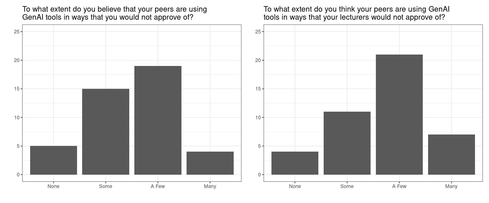
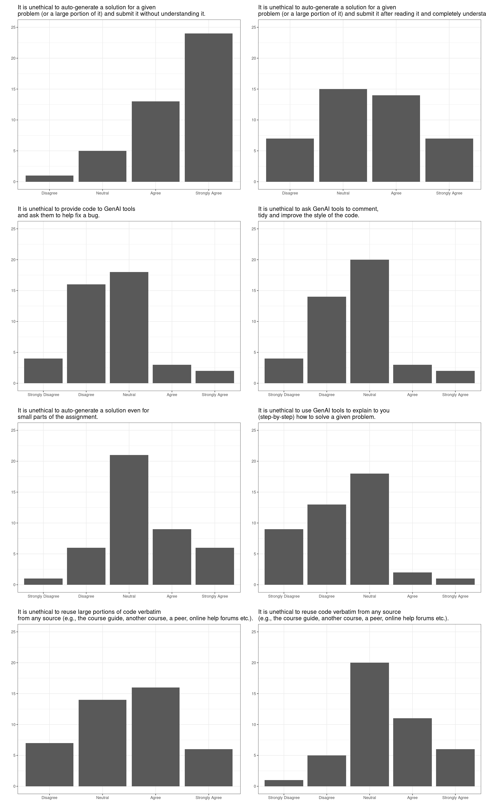
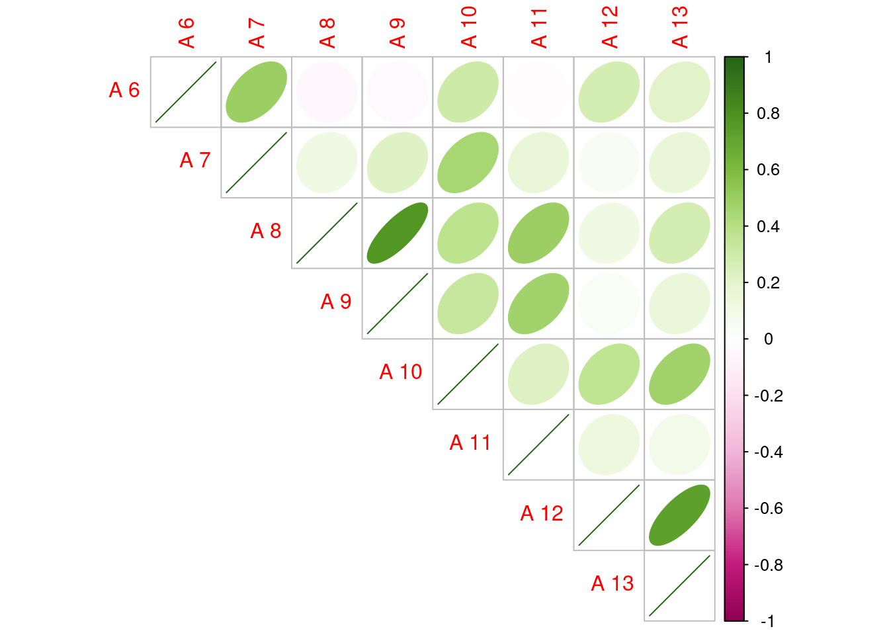
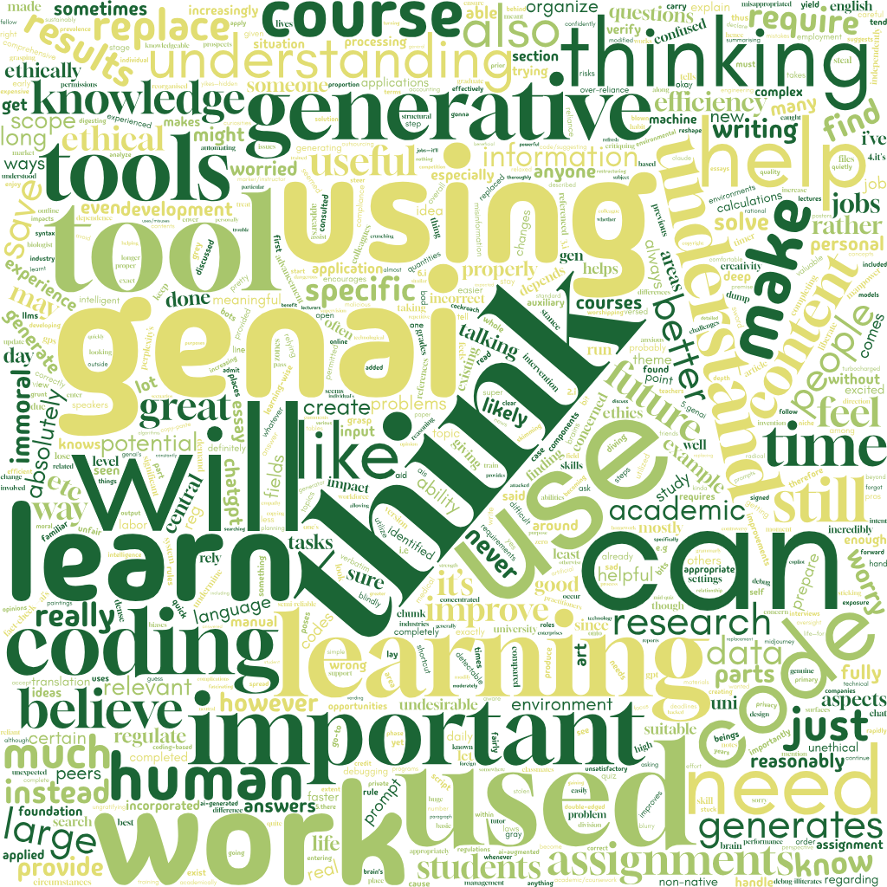
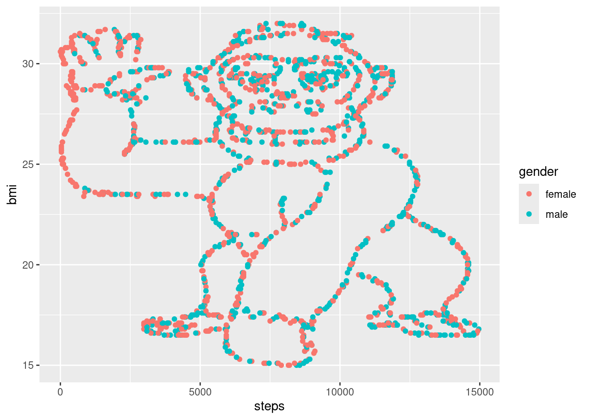

group_allocation <- function(names, seed, groups = 9 ){
set.seed(seed)
tmp <- sample(names, replace = FALSE)
split(tmp, cut(seq_along(tmp), groups, labels = paste("Group", 1:groups)))
}Notes
All BIOSCI 738 lectures require your active involvement! See the course policies for further infomation.
Throughout this runsheet you’ll find a number of different callout boxes:
this box will contain the expected learning objectives and/or outcomes for the material
this box will contain some useful information
First things first…
Note the randomly allocated group mentioned above. Each lecture I’ll have run the following R function that randomly allocates you into groups. It’s your responsibility to get into them, just look for the cows!

Accessing activities
Scan the QR code below, depending on the activity the site will update with what I want to share (e.g., this runsheet etc.)

March 10th
Rough timeline
09:05 am - 10:55 am
09:05–10.25 am Gorilla Gambit (Section 2.2)
10.25–10.55 am Group Code of Conduct (Section 2.3)
- Classwide discussion (Section 2.3.1)
- Group activity (Section 2.3.2)
09:55–10:05 am Break
10.05–10.15 am Introduction to BIOSCI 738 (Section 2.4)
10.15–10.40 am AI in the BOISCI 738 classroom (Section 2.5)
- Classwide discussion (Section 2.5.1)
- Group activity (Section 2.5.2)
10.40–10.55 am Q&A and peer-share (Section 2.6)
Randomly allocated groups
It’s your responsibility to get into these, just look for the cows!
group_allocation(names, seed = 100325)$`Group 1`
[1] "Yutao Yang" "Lana Najar" "Emma Akeroyd" "Shoule Du"
$`Group 2`
[1] "Robert Mihok" "Laura Munck" "Alex Johnson" "Sunny Chen"
$`Group 3`
[1] "Julia Thain" "Xinyue Zhang" "Zichang Li"
[4] "Barnaby Clegg-Shaw"
$`Group 4`
[1] "Pikitangarangi Ratapu" "Zhixiao Zhang"
[3] "Anqi Cheng" "Antonia Schebek-Fuerstenberg"
$`Group 5`
[1] "Congkai Meng" "Jiaxin Liu" "Yingyi Wang"
$`Group 6`
[1] "Tongzheng Yao" "Jianing Chen" "Charlotte Sutton" "YOGAPRIYA S"
$`Group 7`
[1] "Ziyi Wang" "Yutong Wang" "He Li" "Bayu Pitandoyo"
$`Group 8`
[1] "Karie Labidon" "Happy Liang" "Angel Loh" "Yue Ma"
$`Group 9`
[1] "Leyang Liu" "Keyi Sun" "Yi Han" "Shuxiang He"Gorilla Gambit
Group activity roles include
- A runner, responsible for running (or at least getting the next instruction from Charlotte)
- A coder, responsible for implementing the code for the group this does NOT mean the sole coder, rather the person responsible for running any suggested code etc.
- A timekeeper, responsible for managing time for the group, making sure you stay on track
- A facilitator, responsible for seeking out opinions from all group members and ensuring that everyone has the opportunity to contribute
In your groups quickly determine who is filling what role by order of next birthdays: the person with the next birthday will be the runner, the next birthday after that will be the coder, the third birthday will be timekeeper, and if your group has four members, the fourth member will be the facilitator.
Once you have allocated group roles your runner should come to me to retrieve the first instruction.
Group Code of Conduct
A classwide agreed group working Code of Conduct
Upon the completion of this activity I will summarise the main themes/suggestions from Section 2.3.2 (that I deem appropriate). This will become the class-agreed group working Code of Conduct that you are expected to adhere to during each activity.
Why I think this is important
As a student of University of Auckland student, you are responsible for understanding and abiding by the requirements of the Student Charter.
In this activity we’re going to be talking about my and your expectation when working in a group during this class, see this section of the course guide for further details.
A Code of Conduct is not just a strange thing the university make you sign. They are a large part of many professional and research-focused bodies beyond university. The following lists just a few examples of societies or institutes you will likely come across during a biostats career in NZ.
Write your own
In your groups head to this shared Google Doc.
Follow the instructions given around assigning group role.
Your notetaker should then navigate to your groups’ section.
As a group discuss and write down your expectations of yourself and each other during group work activities. You may want to think about
- how to ensure all members feel welcome,
- your expectations around being an active (and equal) contributor, and
- your expectations around use of technologies during activities.
Introduction to BIOSCI 738
- 📢 Call for class rep! 📢 First meeting 25 March, 1-2pm
- The course guide, how it works
- Assessments in BIOSCI 738
GenAI in the BIOSCI 738 classroom
Expectations of genAI use
Upon the completion of this activity I will summarise the main themes/suggestions from Section 2.5.2 (that I deem appropriate). This will become the class-agreed group working Code of Conduct that you are expected to adhere to during each activity.
Who’s heard of bullshit?
Recently, there has been considerable interest in large language models: machine learning systems which produce human-like text and dialogue. Applications of these systems have been plagued by persistent inaccuracies in their output; these are often called “AI hallucinations”. We argue that these falsehoods, and the overall activity of large language models, is better understood as bullshit in the sense explored by Frankfurt (On Bullshit, Princeton, 2005): the models are in an important way indifferent to the truth of their outputs
This is an excerpt from the abstract of Hicks, Humphries, and Slater (2024).
If a student is confused about a concept, they can sit with ChatGPT and it will talk to them for hours about that particular concept.
It is a really great tool to create code but also a really great tool to prevent yourself from learning.
It’s teachers’ responsibility to motivate them and make such a problem that [students] are keen to solve and in a way that they actually would like to learn something and realize that they need these skills also in the future.
…there have always been so many ways of cheating, but I don’t think I’ve ever been aware of such an obvious, cheap, and easy way of cheating. Students can get [an AI tool] to answer any question I can ask them at the moment and therefore I have lost my ability to confidently assess any work that students hand in.
I think we need different kinds of professionals with different understandings of computing. Some need to be very deeply involved with how our programming languages work … others might only need some kind of overall understanding. They are not programmers by themselves, but they still should understand how software is produced.
All the above are quotes garnered in Sheard et al. (2024).
Remember back to last week when I asked you to complete a pre-course quiz or two? Below are a summary of your responses to the genAI related questions. These questions were, by design, worded in the same way those in Prather et al. (2023) (see Figure 3 of that paper for a summary of their findings).
A summary of your responses


| Answer | Freq |
|---|---|
| Allowed/Disallowed | 37 |
| Always allowed | 3 |
| Always disallowed | 3 |


| Abbr | Question |
|---|---|
| A 6 | It is unethical to auto-generate a solution for a given problem (or a large portion of it) and submit it without understanding it. |
| A 7 | It is unethical to auto-generate a solution for a given problem (or a large portion of it) and submit it after reading it and completely understanding it. |
| A 8 | It is unethical to provide code to GenAI tools and ask them to help fix a bug. |
| A 9 | It is unethical to ask GenAI tools to comment, tidy and improve the style of the code. |
| A 10 | It is unethical to auto-generate a solution even for small parts of the assignment. |
| A 11 | It is unethical to use GenAI tools to explain to you (step-by-step) how to solve a given problem. |
| A 12 | It is unethical to reuse large portions of code verbatim from any source (e.g., the course guide, another course, a peer, online help forums etc.). |
| A 13 | It is unethical to reuse code verbatim from any source (e.g., the course guide, another course, a peer, online help forums etc.). |

Some specific answers I particularly liked or wanted to discuss
In my opinion, the controversy behind LLMs and other AIs is rather blown out of proportion, if people use it to do all their assignments for them it should be EASILY detectable for any marker/instructor…
I’m getting increasingly concerned by assignments at uni with the basic premise of “get chatgpt to generate this, then do [whatever is relevant for the assignment which is almost never critiquing the output]”…
I don’t enjoy the increasing prevalence and reliance on AI in academic settings and in day to day life due the large environmental impacts and blurry ethics…
GenAI’s kinda like a double-edged sword for jobs…AI’s the shortcut, but my brain’s still the GPS!
I have been using Grammarly (to my understanding, it’s also a generative AI),…
I’m worried that non-native English speakers using translation tools might be identified as AI…
Do you have anything else that you’d to mention about your experiences with GenAI tools?
Share and discuss
Again in your groups head to the shared Google Doc.
As a group discuss and write down your expectations of yourself and each other with regards to use of GenAI for classroom activities, and assignment activities. You may want to think about
- how to ensure GenAI tools are use for the benefit of everyone’s learning, or
- what your expectations are of your peers who use gen AI are.
March 14th
Rough timeline
02:05 pm - 03:55 pm
09:05–10.15 am Activity & AI expectations (Section 3.2)
10.15–10.55 am Data visualization (Section 3.3)
- What makes a plot? (Section 3.3.1)
- Roast my plots (Section 3.3.2)
09:55–10:05 am Break
10.05–10.30 am Good programming practice (Section 3.4)
- Classwide discussion (?@sec-prog_practice01)
- Group activity (Section 3.4.1)
10.30–10.50 am Reproducible / retracted analysis (Section 3.5)
10.50–10.55 am Q&A and peer-share (Section 2.6)
Randomly allocated groups
It’s your responsibility to get into these, just look for the cows!
group_allocation(names, seed = 1312)$`Group 1`
[1] "Leyang Liu" "Alex Johnson" "Pikitangarangi Ratapu"
[4] "Ziyi Wang"
$`Group 2`
[1] "Congkai Meng" "Zichang Li" "Yutao Yang"
[4] "Francesca Domanska"
$`Group 3`
[1] "Happy Liang" "Yutong Wang" "Karie Labidon" "Sunny Chen"
$`Group 4`
[1] "Angel Loh" "Anqi Cheng" "Bayu Pitandoyo" "Charlotte Sutton"
$`Group 5`
[1] "Barnaby Clegg-Shaw" "Shoule Du" "Yi Han"
[4] "Yingyi Wang"
$`Group 6`
[1] "Laura Munck" "Lana Najar"
[3] "YOGAPRIYA S" "Antonia Schebek-Fuerstenberg"
$`Group 7`
[1] "Keyi Sun" "Jiaxin Liu" "Julia Thain" "Tongzheng Yao"
$`Group 8`
[1] "Shuxiang He" "Robert Mihok" "Yue Ma" "Xinyue Zhang"
$`Group 9`
[1] "Emma Akeroyd" "He Li" "Zhixiao Zhang" "Jianing Chen" Activity & AI expectations
A classwide agreed group working Code of Conduct
As decided by you in last lecture’s activity Section 2.3. I have updated the course guide accordingly!
Data visualization
What makes a plot?
Scan the QR code below and based on vibes alone choose your favourite until I tell you to stop
Roast my plots
Good programming practice
Write your own
Reproducible / retracted analysis
In this task you’re going to be using data collected as part of this study and
The data comes from a study that claims to show that people are less likely to act dishonestly when they sign an honesty pledge at the top of a form rather than at the bottom of a form. Participants received a worksheet with 20 math puzzles and were offered $1 for each puzzle they (reported to have) solved correctly within 5 minutes. After the 5 minutes passed, participants were asked to count how many puzzles they solved correctly and then throw away their worksheets. The goal was to mislead participants into thinking that the experimenter could not observe their true performance, when in fact they could because each worksheet had a unique identifier. Thus, participants could cheat (and earn more money) without fear of being caught, while the researchers could observe how much each participant had cheated. Participants then completed a “tax” form reporting how much money they had earned, and also how much time and money they spent coming to the lab. The experimenters partially compensated participants for those costs.
The paper reported very large effects. Signing at the top vs. the bottom lowered the share of people over-reporting their math puzzle performance from 79% to 37% (p = .0013), and lowered the average amount of over-reporting from 3.94 puzzles to 0.77 puzzles (p < .00001). Similarly, it nearly halved the average amount of claimed commuting expenses, from $9.62 to $5.27 (p = .0014).
Activity solutions
Suggested
R code solutions
This section will be update with my suggested solutions to the class wide activities after their conclusion. I strongly recommend that you review these outside of class if only to familiarise yourself with a different approach.
Suggested solution to Section 2.2
require(tidyverse)
## read in data
data <- readr::read_csv("https://raw.githubusercontent.com/STATS-UOA/databunker/master/data/BMI.csv")
data# A tibble: 1,786 × 3
bmi steps gender
<dbl> <dbl> <chr>
1 20 10413 male
2 21.3 13944 female
3 17.2 12670 female
4 17.5 4879 male
5 29 4587 female
6 27.6 8883 female
7 30.1 8155 male
8 26.2 2767 female
9 31.2 6335 male
10 26 7755 female
# ℹ 1,776 more rows## Mean BMI
data %>%
summarise(mean(bmi)) %>%
round()# A tibble: 1 × 1
`mean(bmi)`
<dbl>
1 25## Max BMI males
data %>%
filter(gender == "male") %>%
filter(bmi == max(bmi))# A tibble: 4 × 3
bmi steps gender
<dbl> <dbl> <chr>
1 32 7864 male
2 32 7937 male
3 32 7354 male
4 32 8629 male ## t-test BMI males vs females
t.test(bmi ~ gender, data = data)
Welch Two Sample t-test
data: bmi by gender
t = 1.4055, df = 1682.9, p-value = 0.1601
alternative hypothesis: true difference in means between group female and group male is not equal to 0
95 percent confidence interval:
-0.1354235 0.8202242
sample estimates:
mean in group female mean in group male
25.08676 24.74436 ## t-test steps males vs females
t.test(steps ~ gender, data = data)
Welch Two Sample t-test
data: steps by gender
t = -7.3403, df = 1772.2, p-value = 3.231e-13
alternative hypothesis: true difference in means between group female and group male is not equal to 0
95 percent confidence interval:
-1577.1251 -912.0336
sample estimates:
mean in group female mean in group male
6785.428 8030.008 ## plotting. ALWAYS PLOT YOUR DATA!
ggplot(data, aes(x = steps, y = bmi, col = gender)) +
geom_point()
References
Hicks, M. T., J. Humphries, and J. Slater. 2024. “ChatGPT Is Bullshit.” Ethics and Information Technology 26 (38). https://doi.org/10.1007/s10676-024-09775-5.
Jones-Todd, Charlotte M., Peter Caie, Janine B. Illian, Ben C. Stevenson, Anne Savage, David J. Harrison, and James L. Bown. n.d. “Identifying Prognostic Structural Features in Tissue Sections of Colon Cancer Patients Using Point Pattern Analysis.” Statistics in Medicine 38 (8): 1421–41. https://doi.org/https://doi.org/10.1002/sim.8046.
Jones-Todd, Charlotte M., and Alec B. M. van Helsdingen. n.d. “Stelfi: An r Package for Fitting Hawkes and Log-Gaussian Cox Point Process Models.” Ecology and Evolution 14 (2): e11005. https://doi.org/https://doi.org/10.1002/ece3.11005.
Jones-Todd, Charlotte M., Enrico Pirotta, John W. Durban, Diane E. Claridge, Robin W. Baird, Erin A. Falcone, Gregory S. Schorr, Stephanie Watwood, and Len Thomas. n.d. “Discrete-Space Continuous-Time Models of Marine Mammal Exposure to Navy Sonar.” Ecological Applications 32 (1): e02475. https://doi.org/https://doi.org/10.1002/eap.2475.
Prather, James, Paul Denny, Juho Leinonen, Brett A. Becker, Ibrahim Albluwi, Michelle Craig, Hieke Keuning, et al. 2023. “The Robots Are Here: Navigating the Generative AI Revolution in Computing Education.” In. New York, NY, USA: Association for Computing Machinery. https://doi.org/10.1145/3623762.3633499.
Sheard, Judy, Paul Denny, Arto Hellas, Juho Leinonen, Lauri Malmi, and Simon. 2024. “Instructor Perceptions of AI Code Generation Tools - a Multi-Institutional Interview Study.” In. New York, NY, USA: Association for Computing Machinery. https://doi.org/10.1145/3626252.3630880.
Footnotes
Note I have intentionally only used published plots that I made, I consent to the roasting!↩︎